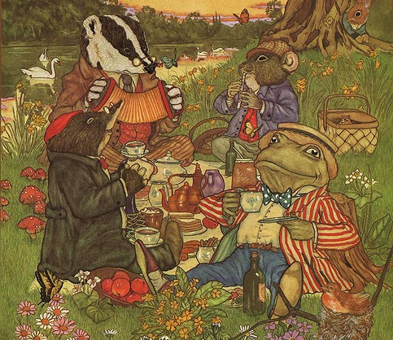

Onların "mucizeleri"nin kökeni (sadece kullanımı değil) yergi niteliği taşır, mantıksızlığın parodisidir; ve "rüya" unsuru sadece girişi ve sonucu hazırlayan bir mekanizma değildir, olayların ve bağlantıların doğasında bulunur. Eğer çocuklar kendi hallerine bırakılsa, bu şeyleri algılayabilir ve takdir edebilirler. Ama pek çok çocuğa, bana olduğu gibi, Alice bir peri masalı gibi sunulmuştur ve bu yanlış anlama devam ettiği sürece, rüya mekanizmasından bir zevk almama hissedilir. Dört Arkadaş'ta{72} rüya'ya dair bir ima yoktur. "Köstebek, bütün sabah boyunca, küçük evinde bahar temizliği yaparken çok çalıştı." Böyle başlar ve bu doğru ton sürdürülür. Bu mükemmel kitabın coşkulu bir hayranı olan A.A. Milne'nin{73}, kendisinin sahneye uyarladığı versiyonuna bir nergisle telefon eden bir çocuğun görüldüğü "mizahi" bir açılış koyması çok daha dikkate değerdir. Ya da belki de o kadar dikkate değer değildir, çünkü kitabı algılama kabiliyetine sahip bir hayranı (fanatik bir hayranından farklı olarak) hiçbir zaman kitabı sahneye koymaya kalkışmazdı. Doğal olarak, sadece daha sade olan içerikler, yani pandomim ve yergici hayvan fablı unsurları bu formda sunuş yeteneğine sahiplerdir. Oyun, tiyatronun daha düşük bir seviyesine ve tahammül edilebilir iyi bir eğlenceye sahip, özellikle kitabı okumamış seyirciler için; ama Kurbağalı Evin Kurbağası'nı izlemeye götürdüğüm bazı çocukların başlıca anıları, açılıştaki mide bulantılarıydı. Oyunun geri kalanını ise kitaptan hatıralarıyla anmayı tercih ettiler.

Four Friends in The Wind in the Willows
(Michael Hague)